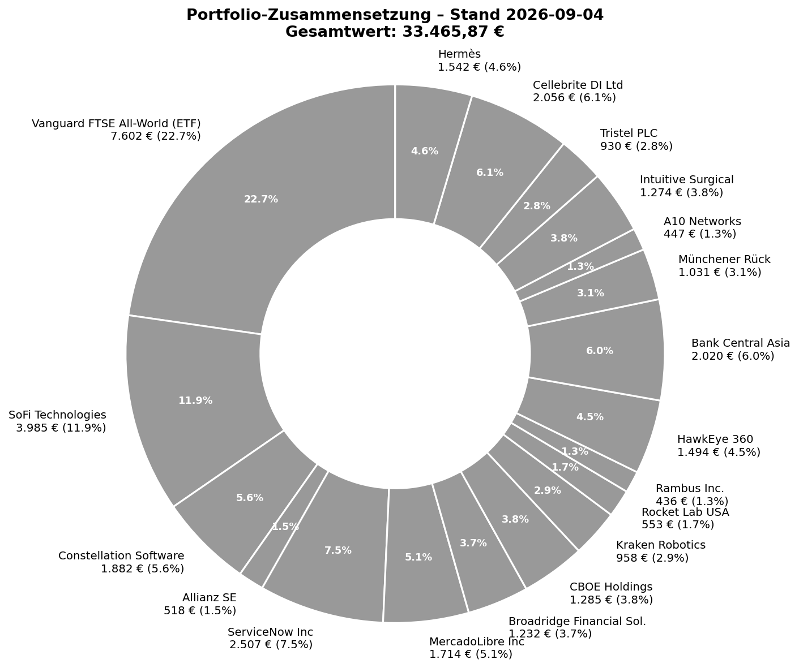
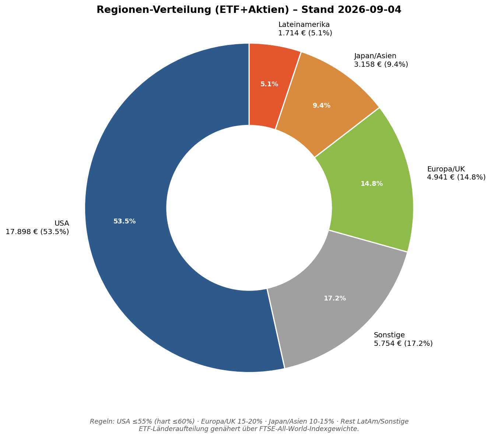
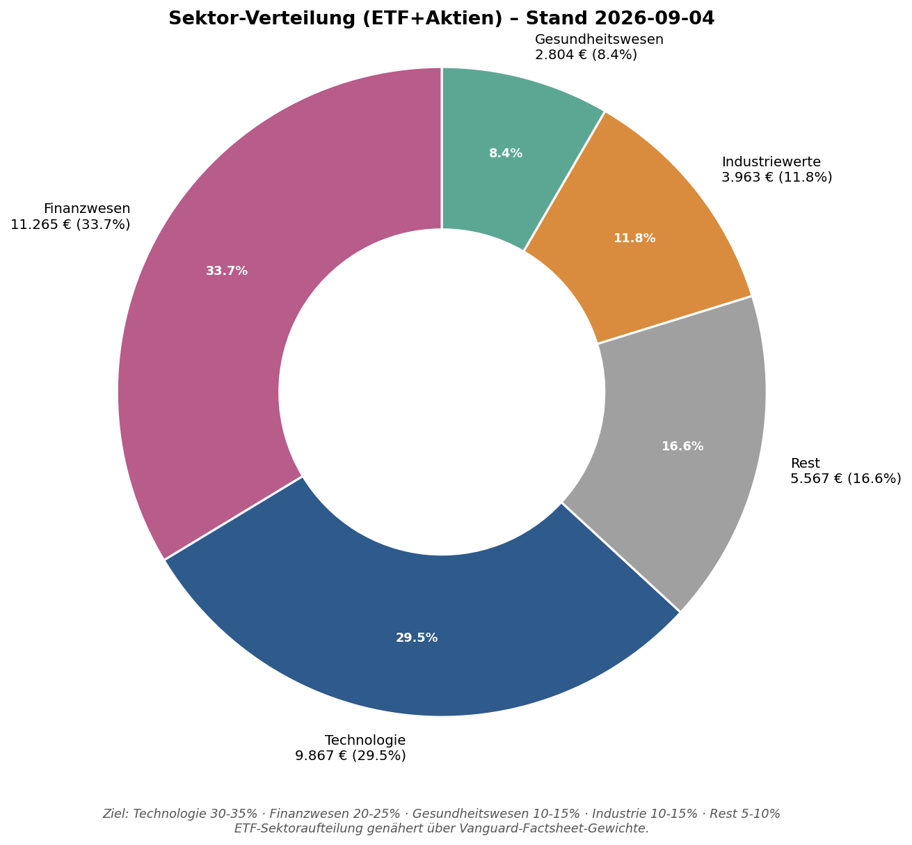
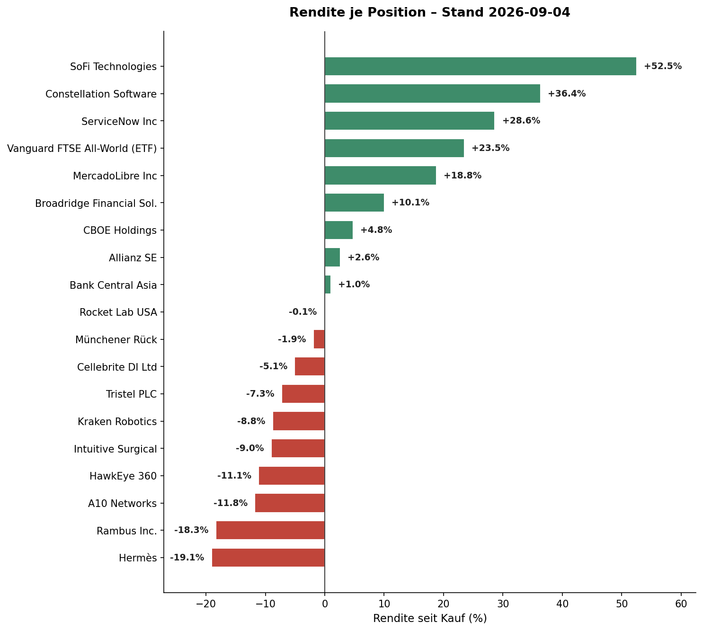
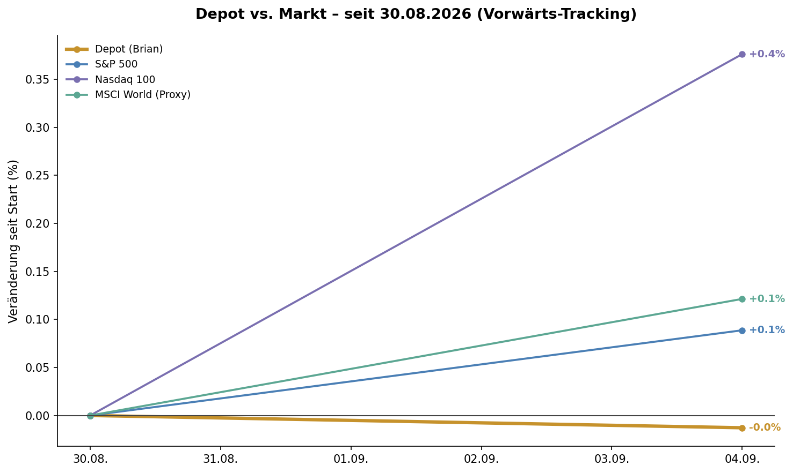

Keine Neuzugänge, keine Abgänge (Ausschluss-Archiv weiterhin leer) — die Watchlist-Bewegung dieser Woche war ausschließlich Rekategorisierung aus dem "geschärfter Blick"-Review (siehe Seite 2): 8 Hochstufungen, 2 Abstufungen. Alle CRV-Ampeln wurden im selben Zuge gegen die aktuelle Bewertung neu hergeleitet (eigene KGV-/Peer-Logik, externe Quellen nur als Rohdaten) — das erfüllt die wöchentliche CRV-Pflege für diese Woche bereits vollständig.
Keine neue "möglicher Qualitäts-Upgrade ggü. bestehendem Depot-Wert"-Markierung diese Woche — der Fokus lag auf der Konsolidierung bestehender Fehlzuordnungen (Liquiditäts-/Marktkap-Proxys wurden mehrfach als unzulässiges Kriterium erkannt und korrigiert), nicht auf neuen Funden. Nächster Kandidat mit Upgrade-Potenzial bleibt offen für die kommende Woche.
| Ticker | Firma | CRV | Kurznotiz |
|---|---|---|---|
| PLTR | Palantir | MEIDEN | Forward-KGV 98-176x, extreme Bewertung trotz operativ verbesserter Story. |
| INOD | Innodata | BEOBACHTEN | KGV 52,5x vs. Branchen-Ø 23,3x, aber starkes Momentum (+86% YTD), Wochenänd. -2,7%. |
| 6323 | Rorze Corp. | MEIDEN | Bewertung läuft der Ertragsentwicklung davon; diese Woche zusätzlich vollständig als Depot-Talent-Kandidat geprüft & abgelehnt (s. Seite 2), Wochenänd. -8,1%. |
Weiterhin leer — kein Wert seit Bestehen der Watchlist archiviert.
| Regel | Ziel | Ist | Status |
|---|---|---|---|
| Größte Einzelposition | ≤10% (Ausnahme bis 12%) | SoFi Technologies 11,4% | GRENZWERTIG |
| Keine Position <1% | ≥1% (außer markierte Trace-Pos.) | kleinste: Rambus 1,24% | ERFÜLLT |
| ETF-Mindestanteil | ≥50% (Ziel langfr. 60%) | 21,7% | VERSTOSS |
| Region USA | ≤55% (hart ≤60%) | 53,5% | ERFÜLLT |
| Region Europa/UK | 15-20% | 14,8% | KNAPP UNTER |
| Region Japan/Asien | 10-15% | 9,4% | UNTER ZIEL |
| Region LatAm | nur bei echten Kandidaten | 5,1% (MercadoLibre) | OK |
| Region Sonstige (CA/IL) | kein festes Band | 17,2% (Kraken, Constellation, Cellebrite) | HINWEIS |
| Sektor Technologie | 30-35% | 29,5% | KNAPP UNTER |
| Sektor Finanzwesen | 20-25% | 33,7% | VERSTOSS |
| Sektor Gesundheitswesen | 10-15% | 8,4% | UNTER ZIEL |
| Sektor Industriewerte | 10-15% | 11,8% | ERFÜLLT |
| Sektor Rest | 5-10% | 16,6% | VERSTOSS |
ETF-Anteil (21,7% statt ≥50%) ist der klarste Regelverstoß und seit Wochen strukturell unverändert (Baseline 29.08. war ähnlich niedrig) — keine akute Marktentscheidung, aber eine bewusste Aufbauphase-Spannung: die 28 Einzelwert-Käufe der Depot-Restrukturierung (27.08.) haben den ETF-Anteil verwässert, während der Sparplan nur 600€/Monat zuführt. Kein Sofort-Handlungsbedarf laut Regelwerk (harte Leitplanke ohne Phasen-Ausnahme, aber auch kein Zwang zum sofortigen Einmalkauf außerhalb der Trockenpulver-Logik) — siehe Klare Linie, Seite 6.
SoFi 11,4% ist organischer Kursanstieg (+52,5% seit Kauf), nicht bewusster Nachkauf — liegt innerhalb der 12%-Ausnahme für Top-Conviction-Positionen, kein Handlungsdruck.
Finanzwesen (33,7%) und "Rest" (16,6%) überschreiten ihre Bänder spürbar — primär weil BCA, Münchener Rück, Allianz, CBOE, Broadridge, SoFi alle als Finanzwesen zählen und MercadoLibre/Hermès in "Rest" fallen. Kein einzelner Fehlkauf, sondern die Summe vieler für sich genommen sinnvoller Positionen. Gesundheitswesen (8,4%) und Japan/Asien (9,4%) sind die am stärksten unterrepräsentierten Töpfe — deckt sich mit der offenen Talent-Slot-Suche in Japan (siehe Seite 2).
Zusatzinfo (kein formeller Wochen-Check, aber informativ): Kategorie-Kapitalgewicht Champions 56,8% (Ziel 35-45%, über Ziel) / Profi 41,0% (Ziel 20-30%, über Ziel) / Talent 2,1% (Ziel 25-40%, weit unter Ziel) — spiegelt exakt die Talent-Untergewichtung in der Positionsanzahl.





| Position | Herkunft | Wochenänd. | Grund |
|---|---|---|---|
| NVDA Nvidia | Watchlist | +5,01% | Hugging-Face-Übernahme (12,9 Mrd. $) + nachlassende Fed-Zinssorgen |
| VRT Vertiv | Watchlist | +4,57% | Übernahme UtilityInnovation Group (~1,45 Mrd. $), AI-Rechenzentrums-Ausbau |
| BBCA Bank Central Asia | Depot | +3,47% | kein klarer Einzelgrund identifiziert |
| 6146 Disco Corp | Watchlist | -8,24% | Sektor-Rotation weg von jap. Halbleiterausrüstern, Yen-Stärke (BoJ-Erwartung) |
| 6323 Rorze | Watchlist | -8,09% | dito, kein spezifischer Einzelgrund |
| 7747 Asahi Intecc | Watchlist | -7,58% | dito, kein spezifischer Einzelgrund |
Keine Position steht diese Woche in Kategorie 4 (Teilverkauf) oder 5 (Verkauf erwägen) — damit kein Umschichtungs-Kandidat zu prüfen.
EZB-Ratssitzung (Zinsentscheid), 09./10.09.2026 — innerhalb der nächsten 7 Tage, relevant für Europa-Exposure (Allianz, Münchener Rück, Hermès, Tristel). Danach, knapp außerhalb des 7-Tage-Fensters: FOMC-Sitzung 15./16.09. (Fed-Funds-Zielkorridor aktuell 3,50-3,75%) und BoJ-Sitzung 16./17.09. (Yen-Zinspfad relevant für BCA-Umrechnung sowie Disco/Lasertec/Rorze/Asahi Intecc in der Watchlist).
Investitionsklima (Stand 04.09., Tagesscan): Aktien-Technik bullisch (S&P über 50D- UND 200D-SMA, 200D-Linie steigend, VIX ruhig bei 14,3), aber Fear&Greed-Quellenlage uneinheitlich (eher Fear trotz Kursen nahe Hoch) und Gold nahe Rekordhoch (~4.430-4.480 USD/oz) deuten auf fortlaufende Absicherungsnachfrage. US-Dollar-Index moderat (~99), US-High-Yield-Spreads historisch eng (~265 Bps, kein Kreditmarkt-Stress-Signal), Ölpreis erhöht/Richtung uneinheitlich (~91 USD/Barrel, mögliche Nahost-Prämie) — im Blick als Inflationsrisiko. China: kalibrierter, schrittweiser Stimulus-Kurs (zusätzliche Anleiheemission ~2 Bio. Yuan für H2) statt großem Knall, tendenziell unterstützend. In Summe: kein reines "Alles-Grün"-Bild, aber auch kein Vorsichts-Signal, das gegen die laufende Strategie spricht.
Champions und Profi sind beide exakt auf Ziel (10/10, 7/7) — kein Bedarf für eine komplett neue Position. Von den 7 aktuell 🟢-bewerteten Champions (Intuitive Surgical, Münchener Rück, ServiceNow, Hermès, MercadoLibre, Bank Central Asia, Tristel) sticht Bank Central Asia hervor: klar unterbewertet (KGV ~12-14x, 52% unter 10J-Median, ROE 24,1%) UND adressiert gleichzeitig die Japan/Asien-Regionslücke (9,4% vs. Ziel 10-15%) — ein seltener Fall, in dem Bewertungssignal und Struktur-Bedarf zusammenfallen. Kraken Robotics und HawkEye 360 sind laut Brians eigener Festlegung "erstmal voll", kein aktiver Nachkauf-Wunsch dort.
Der auffälligste strukturelle Punkt bleibt der ETF-Anteil (21,7% statt ≥50%) — keine Korrektur- oder Regime-Wechsel-Trigger ist laut Tagesscan aktuell erfüllt, die 200€/Monat-Korrektur-Reserve (aktuell 1.060,33€, noch unter dem 3-5%-Cash-Cap) bleibt also regelkonform als Trockenpulver liegen, statt vorzeitig als ETF-Einmalkauf eingesetzt zu werden. Wer trotzdem gezielt gegensteuern will: der reguläre 600€/Monat-Sparplan (nächste Ausführung 07.09.) trägt strukturell zur Annäherung bei, ein bewusster zusätzlicher ETF-Einmalbeitrag (statt eines weiteren Einzelwert-Kaufs) wäre die direkteste Stellschraube.
Nicht auf Teufel komm raus investieren — wenn nichts klar überzeugt, bleibt das Geld Cash. Diese Woche überzeugt nichts stark genug für einen impulsiven Kauf; BCA ist eine solide, aber keine dringende Gelegenheit.
Positionsgrößen-Prozente auf Basis Gesamtportfolio inkl. Gold-ETC und Cash (35.029,69€ finanzen.net zero + Trade Republic + Smartbroker+ + Scalable Capital). Region-/Sektor-Prozente auf Basis ETF+Aktien (ohne Gold/Cash, wie architecture.md vorgibt). Hermès und Münchener Rückversicherung wurden diesen Zyklus nicht frisch abgerufen (Datenlücke, siehe finanzen-net-zero.md) — Werte vom 29.08./02.09. übernommen, geringer Effekt auf Gesamtsumme. Tristel-Kurs aus der berichteten Wochenperformance (ca. -1,6%) auf den letzten bekannten EUR-Kurs abgeleitet, statt aus einer selbst geschätzten GBP/EUR-Umrechnung — No-False-Precision-Prinzip. CRV-Ampel-Urteile sind stets eigene Herleitung aus KGV/Wachstum/Marge-Logik bzw. KBV/ROE bei Banken/Versicherern, externe Quellen dienen nur als Rohdaten.
Scalable Capital MCP (Live-Portfoliodaten) · Twelve Data (Live-Kurse SoFi, ServiceNow, Cellebrite, MercadoLibre, Constellation Software, Intuitive Surgical, Broadridge, CBOE, Rambus, A10 Networks, Rocket Lab, HawkEye 360, BCA-Wochenperf.) · stockanalysis.com (Kraken Robotics TSXV:PNG, Tokyo-Werte) · boerse.de (Allianz SE) · WebSearch/WebFetch (S&P 500/Nasdaq 100/MSCI-World-Proxy-Indexstände, Earnings-Kalender, DXY/HY-Spread/WTI/China-Makro, Top-Beweger-Begründungen) · depot/kategorisierung.md, watchlist.md, depot/prediction_ledger.md, depot/earnings_calendar.md, depot/macro_context.md (interne Regelwerks-Dateien).
Dieser Report ist Recherche-/Entscheidungsunterstützung für Brians eigene manuelle Anlageentscheidung, keine regulierte Anlageberatung. Keine erfundenen exakten Wahrscheinlichkeiten (No-False-Precision-Prinzip). Alle Kauf-/Verkaufsorders werden ausschließlich manuell durch Brian ausgeführt.